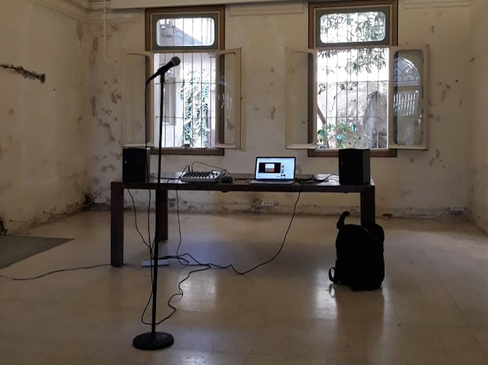
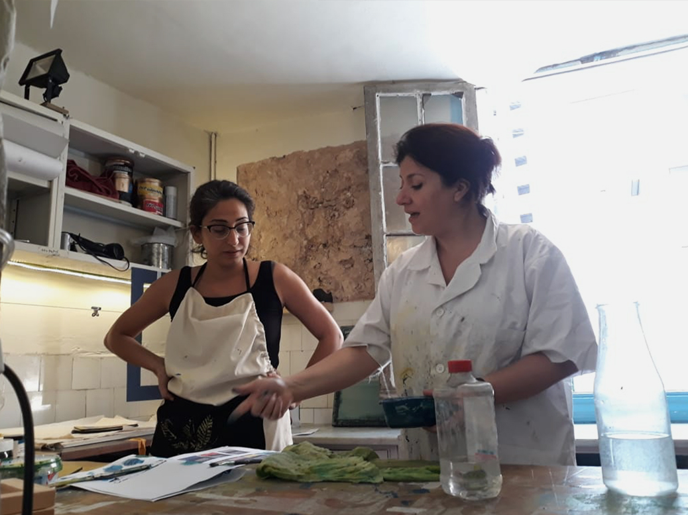

Title of Work by Kinda HassanWe invited members of the Mansion community to join a WhatsApp group and asked them to record and share different sounds. We then sent this sound pool to 4 local sound artists and asked them to compose radio pieces from the sounds in the pool. This is what Paris-based Lebanese artist Kinda Hassan came up with.
Hubūt by Yumna SabaBased on "La Chute", by Albert Camus; written and performed by Youmna Saba; Concrete sound "WOODEN STAIRS _ going down", from Radio Mansion sound pool; Recorded and mixed by Fadi Tabbal, at Tunefork; 2018, Beirut, Lebanon.
Reversing the Child by Nour Sokhn & Freya Edmondes Morning musings in which the Mansion resident takes us through the ways in which she translates sounds into poetry.
Soundtrack for a Horror Movie by Stephanie MerchakGhada Saffa and Nour Hamdan joined the Mansion Residency in 2015 and since then they've been leading Yoga classes in the spaces.
Mansion Sound StudioWe asked Mansion resident and founder of Studio Zumra, Ayman Hassan, to curate a full day’s worth of music. He ended up having long conversations with musician May Obeid about his selections, a process that gave rise to the #MansionSoundStudio. This is MSS’s first episode.
Sound Collage from the Indian SubcontinentProduced by Radio Mansion collaborator and founder of Discostan, Arshia Fatima Haq.
The Perfumed GardenLayal Hasrouni reads a chapter from Raafat Majzoub’s debut novel The Perfumed Garden.
The Fasleh ProjectProduced by The A Project, this podcast aims at creating a space to reaffirm agency and autonomy in sexuality and mental health.
Bus CemeteryA sound piece by Dictaphone Group on one of the derelict busses in the Mar Mikhail bus station in Beirut. Written by Tania El-Khoury and performed by Petra Serhal.
Suggestion BoxA sound piece by Rola Fares, produced for I will Guide You Through Saida, a project by Dictaphone group on the shared and communal spaces in Saida, specifically the coastal areas and the changes they are undergoing.
Mathaf #ChouHaydaIn November 2017, people from across Beirut came to its National Museum and gave their voices to a number of objects in the museum’s collection. A project by Temporary Art Platform.

I See the SeaWe commissioned young poets to write poetry that begins with “I see the sea”, inspired by the view from Mansion’s rooftop, where you could still see the sea if you squeezed yourself tightly in one corner. That little strip of blue we seek and sometimes still see from Beirut’s balconies and rooftops represents the hope that keeps us moving forward in this city.Recorded at Open Mic: Poetry for Everybody x Radio Mansion.
Radio Art with Hussein NassereddineCurator and Mansion resident Rachel Dedman speaks with artist Hussein Nassreedine about their recent sound work ‘Grass Grows’.
Radio Art with Mirna BamiehCurator and Mansion resident Rachel Dedman speaks with artist Mirna Bamieh and Hussein Nassreedine about her recent sound work ‘Disconcerted’.
Queer Narratives from BeirutNour Nasr discusses bodily rights in Lebanon, her research, and setting up the Gender and Sexuality Resource Center. Produced by Joy Stacey for Queer Narratives Beirut.
LifelineTanja van Deer interviews two operators of Embrace Lebanon’s suicide hotline.

Reading Bedtime StoriesA group of youth perform bedtime stories they wrote for the radio as part of a creative writing workshop we did with them, in collaboration with Cliffhangers and Mouvement Sociale.
Happy (Half) HourComedy show curated and developed by Sabine Salame, featuring Samke and Shaden Fakih.
At the CircusJuggler Elie Boufadel goes to the circus and interviews Nidal from arc en ciel about their circus work and its social impact.
Organizing Against All OddsThe struggle of migrant domestic workers in Lebanon by Jana Grieb. Part of Movements That Matter.